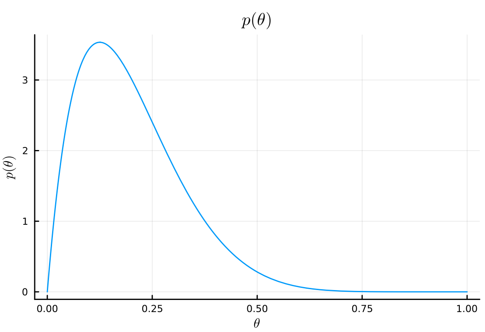
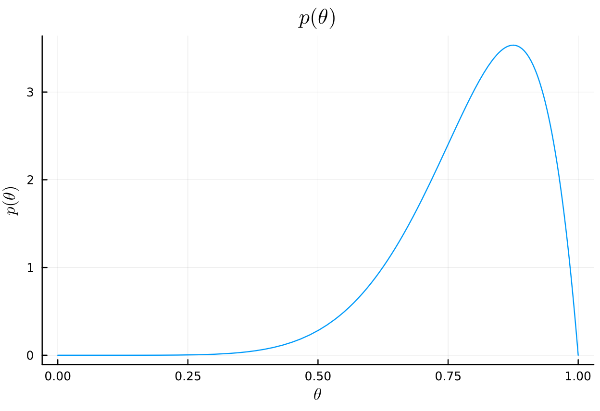
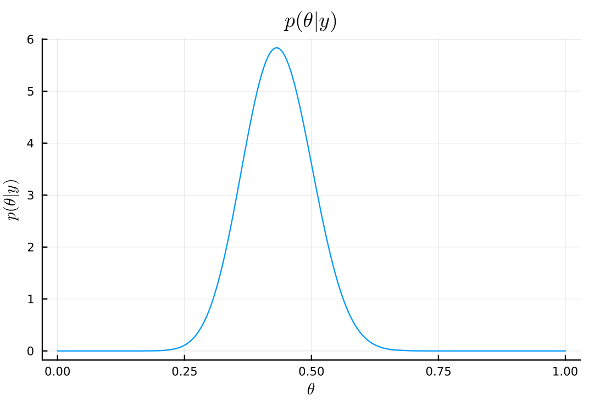
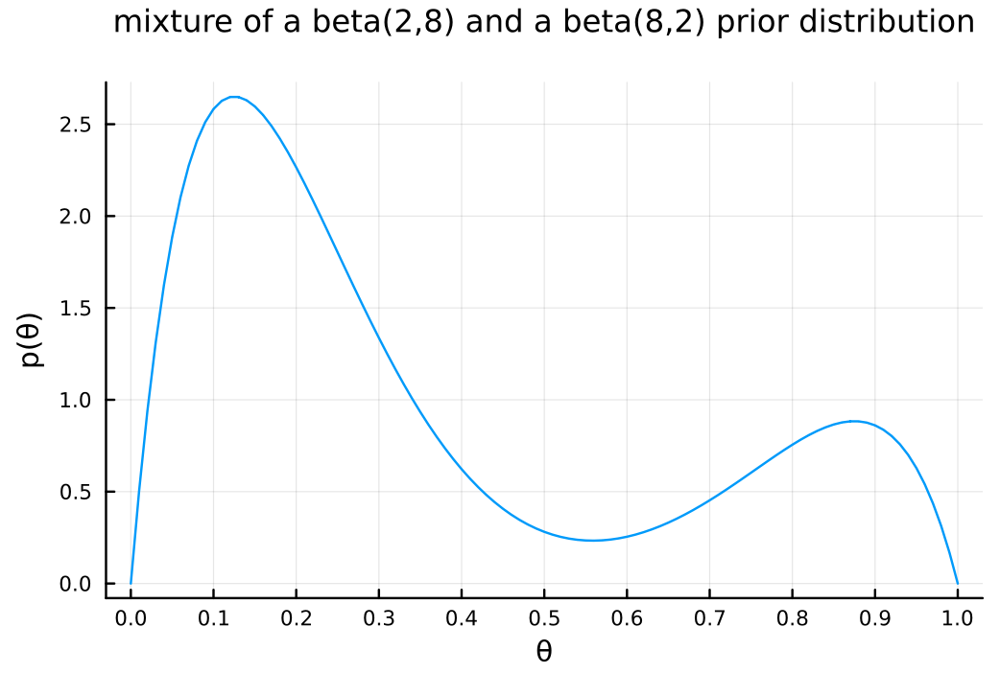

Table of Contents
1. Chapter 3
- 3.1
- a
- Answer
\begin{align*} & \text{Pr}(Y_1 = y_1, \dots , Y_{100}=y_{100} \mid \theta) \\ = &\text{Pr}(Y_1 = y_1 \mid \theta) \cdot \text{Pr}(Y_2 = y_2 \mid \theta) \cdot \dots \cdot \text{Pr}(Y_{100} = y_{100} \mid \theta) \qquad (\because \text{conditionally i.i.d.}) \\ = &\prod_{i=1}^{100} \text{Pr}(Y_i = y_i \mid \theta) \\ = &\theta^{\sum_{i=1}^{100} y_i} (1 - \theta)^{100 - \sum_{i=1}^{100} y_i} \end{align*} \begin{align*} \text{Pr}\left(\sum Y_i = y \mid \theta\right) &= \begin{pmatrix} 100 \\ y \end{pmatrix} \theta^y (1-\theta)^{100-y} \end{align*}
- Answer
- b
- Answer
begin using Plots using Plots.PlotMeasures using Distributions θ = 0:0.1:1.0 n = 100 y = 57 # 全てのθで計算 pdf_for_θs = map(θ -> pdf(Binomial(n, θ), y), θ) end
11-element Vector{Float64}: 0.0 4.107156919234531e-31 3.7384586685675986e-16 1.3068947992216428e-8 0.000228579175709527 0.03006864264421479 0.06672894967432967 0.0018531715480875613 1.0035348574340773e-7 9.39585764212832e-18 0.0# plot bar( θ, pdf_for_θs, xlabel = "θ", ylabel = "p(y|θ)", title = "p(y=$y|θ) for each θ", label = "p(y=$y|θ)", legend = :topleft, size = (600, 400) , margin = 5mm , xticks = 0:0.1:1.0 )

- Answer
- c
- Answer
\begin{align*} p(\theta \mid \sum_{i=1}^{100} Y_i = 57) &= \frac{p(\sum_{i=1}^{100} Y_i = 57 \mid \theta) p(\theta)}{p(\sum_{i=1}^{100} Y_i = 57)} \\ &= \frac{p(\sum_{i=1}^{100} Y_i = 57 \mid \theta) p(\theta)}{\sum_{\theta} p(\sum_{i=1}^{100} Y_i = 57 \mid \theta) p(\theta)} \\ &= \frac{\text{Pr}\left(\sum Y_i = 57 \mid \theta\right) p(\theta)}{\sum_{\theta} \text{Pr}\left(\sum Y_i = 57 \mid \theta\right) p(\theta)} \\ &= \frac{\text{Pr}\left(\sum Y_i = 57 \mid \theta\right) \frac{1}{11} }{\sum_{\theta} \text{Pr}\left(\sum Y_i = 57 \mid \theta\right) \frac{1}{11} } \\ &= \frac{\text{Pr}\left(\sum Y_i = 57 \mid \theta\right) }{\sum_{\theta} \text{Pr}\left(\sum Y_i = 57 \mid \theta\right) } \\ \end{align*}b で求めたものを使うと以下のように簡単に計算できる。
posterior_for_θs = pdf_for_θs ./ sum(pdf_for_θs)
11-element Vector{Float64}: 0.0 4.153700946664936e-30 3.780824452548815e-15 1.3217050800508843e-7 0.0023116953094392757 0.30409393133068335 0.6748515016170306 0.018741724664998797 1.0149073359758722e-6 9.502335447682657e-17 0.0bar( θ, posterior_for_θs, xlabel = "θ", ylabel = "p(θ|y)", title = "p(θ|y=$y) for each θ", label = "p(θ|y=$y)", legend = :topleft, size = (600, 400) , margin = 5mm , xticks = 0:0.1:1.0 )

- Answer
- d
- Answer
\begin{align*} p(\theta) \times \text{Pr}(\sum_{i=1}^n Y_i = 57 \mid \theta) &= \text{Pr}(\sum_{i=1}^n Y_i = 57 \mid \theta) \qquad (\because \text{Pr}(\theta) = 1) \\ &= \begin{pmatrix} 100 \\ 57 \end{pmatrix} \theta^{57} (1-\theta)^{43} \\ &= \text{dbinom}(57, 100, \theta) \end{align*}よって、以下のように計算できる。
posterior = x -> pdf(Binomial(n, x), y) # plot xs = 0:0.01:1.0 plot( xs, posterior.(xs), xlabel = "θ", ylabel = L"p(\theta) \times Pr(\sum_{i=1}^n Y_i = 57 \mid \theta)", title = L"p(\theta) \times Pr(\sum_{i=1}^n Y_i = 57 \mid \theta)", label = "p(θ|y=$y)", legend = :topleft, size = (600, 400) , margin = 5mm , xticks = 0:0.1:1.0 )

- Answer
- e
- a
- 3.2
- Answer
θ₀_list = 0.1:0.1:0.9 n₀_list = [1, 2, 8, 16, 32] n = 100 y = 57 function get_half_cdf(θ₀, n₀) postrior = Beta(θ₀ * n₀ + y, (1 - θ₀) * n₀ + n - y) return 1 - cdf(postrior, 0.5) end contour( θ₀_list, n₀_list, (θ₀_list, n₀_list) -> get_half_cdf(θ₀_list, n₀_list) , clabels=true , xlabel="θ₀", ylabel="n₀" , title = L"Pr(\theta > 0.5 | \sum Y_i = 57,)" )

\(\theta_0\)は\(\theta\)に関する事前の信念、 \(n_0\)は\(\theta\)の事前の信念の強さを表している。 \(\theta_0\)が大きいほど、\(\theta > 0.5\)の事後確率も大きくなり、同じ\(\theta_0\)で比べた時は、だいたい\(\theta_0 < 0.5\)で\(n_0\)が大きいほど、\(\theta > 0.5\)の事後確率が小さくなり、 \(\theta_0 > 0.5\)で\(n_0\)が大きいほど、\(\theta > 0.5\)の事後確率が大きくなる。
よって、事前の知識などを参考にしながら、\(\theta_0\)はどれくらいか、またその信念の強さはどの程度なのかを考えたうえで、それに応じて上のプロットを見ながら\(\theta > 0.5\)の信念をアップデートすることができる。
- Answer
- 3.3
- a)
- answer
using Distributions y_A = [12, 9, 12, 14, 13, 13, 15, 8, 15, 6] y_B = [11, 11, 10, 9, 9, 8, 7, 10, 6, 8, 8, 9, 7] n_A, sy_A = length(y_A) , sum(y_A) n_B, sy_B = length(y_B) , sum(y_B) a₀_A = 120 b₀_A = 10 a₀_B = 12 b₀_B = 1 # Posterior distributions dist_A = Gamma(a₀_A + sy_A, 1/(b₀_A + n_A)) dist_B = Gamma(a₀_B + sy_B, 1/(b₀_B + n_B))
mean_A = (a₀_A + sy_A) / (b₀_A + n_A) mean_B = (a₀_B + sy_B) / (b₀_B + n_B) ["Posterior mean of A: $mean_A" , "Posterior mean of B: $mean_B"]
Posterior mean of A: 11.85 Posterior mean of B: 8.928571428571429 var_A = (a₀_A + sy_A) / (b₀_A + n_A)^2 var_B = (a₀_B + sy_B) / (b₀_B + n_B)^2 ["Posterior variance of A: $var_A" , "Posterior variance of B: $var_B"]
Posterior variance of A: 0.5925 Posterior variance of B: 0.6377551020408163 # 95% quantile-based confidence intervals quantile_A = quantile.(dist_A, [0.025, 0.975]) quantile_B = quantile.(dist_B, [0.025, 0.975]) ["Posterior 95% quantile of A: $quantile_A" , "Posterior 95% quantile of B: $quantile_B"]
Posterior 95% quantile of A: [10.389238190941795, 13.405448325642006] Posterior 95% quantile of B: [7.432064219464302, 10.560308149242365]
- answer
- b
- answer
list_n₀ = 1:50 exp_θ_B = n -> (a₀_B*n + sy_B) / (n + n_B ) # Plot plot( list_n₀, exp_θ_B.(list_n₀), label="Expected value of θ_B", xlabel="n₀", ylabel=L"\theta_B", legend=nothing, title="Expected value of θ_B as a function of n₀" )

\(n_0 = 35\)くらいで、\(\theta_B\)の期待値が\(\theta_A\)の期待値を上回る。この時の\(\theta_B\)の事前分布のプロットは以下の通り。
n = 35 plot( Gamma(a₀_B*n + sy_B, 1/(n + n_B)) , label=L"Prior distribution of \theta_B when n_0 = $n" , legend=false )

上の分布を見ればわかるように、 \(\theta_B\)の事後期待値が\(\theta_A\)の事後期待値と同じくらいになるためには、 \(\theta_B\)がかなりの確率で 11 の近くに分布しているという信念を反映した事前分布が必要。
- answer
- c
- answer
B 系統のマウスは A 系統のマウスと関連性があるとされているので、 A 系統のマウスについての腫瘍数の情報は B 系統のマウスについての腫瘍数の事前情報になり得る。よって、\(p(\theta_A, \theta_B) = p(\theta_A) \times p(\theta_B)\)という仮定は妥当ではなく、 B 系統のマウスと A 系統のマウスの関連の度合いに関する信念のパラメータ\(n_0\)を導入し、 \(p(\theta_B | \theta_A, n_0) = \text{gamma}(E[\theta_A] \times n_0, n_0)\) などという形でモデル化するのが妥当であると考えられる。また、A系統のマウスに関するデータが観測されたあとに B 系統のマウスに関する推測を行う場合には、 \(\theta_B\)の事前期待値に\(\theta_A\)の事後期待値を用いるようなモデリングも可能。
- answer
- a)
- 3.4
- a
using Distributions using Plots using StatsPlots using LaTeXStrings a₀ = 2 b₀ = 8 n = 43 y = 15
# prior plot( Beta(a₀, b₀), title=L"p(\theta)", xlabel=L"\theta", ylabel=L"p(\theta)", legend=false, )

\(y \sim \text{binomial}(43, \theta)\)より、\(p(\theta \mid y)\)を\(\theta\)の関数としてプロットすると以下のようになる。
θ = 0:0.01:1.0 # 全てのθで計算 pdf_for_θs = map(θ -> pdf(Binomial(n, θ), y), θ) # plot plot( θ, pdf_for_θs, xlabel = "θ", ylabel = "p(y|θ)", title = "p(y=$y|θ) as a function of θ", legend = false, size = (600, 400) , margin = 5mm , xticks = 0:0.1:1.0 )
\begin{align*} p(\theta \mid y) &= \frac{1}{p(y)} p(y \mid \theta) p(\theta) \\ &= \frac{1}{p(y)} \begin{pmatrix} 43 \\ 15 \end{pmatrix} \theta^{15} (1-\theta)^{28} \frac{\Gamma(2+8)}{\Gamma(2)\Gamma(8)} \theta^{2-1} (1-\theta)^{8-1} \\ &= \frac{1}{p(y)} \begin{pmatrix} 43 \\ 15 \end{pmatrix} \frac{\Gamma(2+8)}{\Gamma(2)\Gamma(8)} \theta^{17-1} (1-\theta)^{36-1} \\ &= const \times \theta^{17-1} (1-\theta)^{36-1} \\ &= dbeta(\theta, 17, 36) \end{align*}
# posterior posterior_dist = Beta(a₀ + y, b₀ + n - y) plot( posterior_dist, title=L"p(\theta|y)", xlabel=L"\theta", ylabel=L"p(\theta|y)", legend=false, )

# posterior mean mean(posterior_dist) μ = (a₀ + y)/(a₀ + b₀ + n)
0.32075471698113206
# posterior mode mode(posterior_dist) (a₀ + y - 1)/(a₀ + b₀ + n - 2)
0.3137254901960784
# posterior standard deviation std(posterior_dist) var = (μ*(1 - μ))/(a₀ + b₀ + n + 1) sqrt(var)
0.0635188989834093
# posterior 95% interval quantile(posterior_dist, [0.025, 0.975])
2-element Vector{Float64}: 0.2032977878191033 0.45102398221663165 - b
a₀_b = 8 b₀_b = 2
# prior plot( Beta(a₀_b, b₀_b), title=L"p(\theta)", xlabel=L"\theta", ylabel=L"p(\theta)", legend=false, )
\begin{align*} p(\theta \mid y) &= \frac{1}{p(y)} p(y \mid \theta) p(\theta) \\ &= \frac{1}{p(y)} \begin{pmatrix} 43 \\ 15 \end{pmatrix} \theta^{15} (1-\theta)^{28} \frac{\Gamma(2+8)}{\Gamma(2)\Gamma(8)} \theta^{8-1} (1-\theta)^{2-1} \\ &= \frac{1}{p(y)} \begin{pmatrix} 43 \\ 15 \end{pmatrix} \frac{\Gamma(2+8)}{\Gamma(2)\Gamma(8)} \theta^{23-1} (1-\theta)^{30-1} \\ &= const \times \theta^{23-1} (1-\theta)^{30-1} \\ &= dbeta(\theta, 23, 30) \end{align*}
# posterior posterior_dist_b = Beta(a₀_b + y, b₀_b + n - y) plot( posterior_dist_b, title=L"p(\theta|y)", xlabel=L"\theta", ylabel=L"p(\theta|y)", legend=false, )

# posterior mean mean(posterior_dist_b) μ_b = (a₀_b + y)/(a₀_b + b₀_b + n)
0.4339622641509434
# posterior mode mode(posterior_dist_b) (a₀_b + y - 1)/(a₀_b + b₀_b + n - 2)
0.43137254901960786
# posterior standard deviation std(posterior_dist_b) var_b = (μ_b*(1 - μ_b))/(a₀_b + b₀_b + n + 1) sqrt(var_b)
0.06744531631926798
# posterior 95% interval quantile(posterior_dist_b, [0.025, 0.975])
2-element Vector{Float64}: 0.30469562471174694 0.5679527959964581 - c
using SpecialFunctions prior_mix = θ -> 1//4 * gamma(10) / (gamma(2) * gamma(8)) * (3 * θ * (1 - θ)^7 + θ^7 * (1 - θ))
xs = 0:0.01:1.0 plot( xs, prior_mix.(xs), xlabel = "θ", ylabel = "p(θ)", title = "mixture of a beta(2,8) and a beta(8,2) prior distribution", titlefontsize = 12, legend = false, size = (600, 400) , margin = 5mm , xticks = 0:0.1:1.0 )

aやbの事前分布と異なり、上の分布は 2 つの山を持った形状になっている。この事前分布は、再犯率は高いか低いかのどちらかに偏っているという信念を表している。
- d
For the prior in c):
- i
Write out mathematically \(p(\theta) \times p(y \mid \theta)\) and simplify as much as possible.
Answer:
\begin{align*} p(\theta) \times p(y \mid \theta) &= \frac{1}{4} \frac{\Gamma(10)}{\Gamma(2)\Gamma(8)} [3 \theta (1-\theta)^7 + \theta^7 (1-\theta)] \times \begin{pmatrix} 43 \\ 15 \end{pmatrix} \theta^{15} (1-\theta)^{28} \\ &= \frac{1}{4} \frac{\Gamma(10)}{\Gamma(2)\Gamma(8)} \begin{pmatrix} 43 \\ 15 \end{pmatrix} \left[3 \theta^{1+15} (1-\theta)^{7+28} + \theta^{7+15} (1-\theta)^{1+28}\right] \\ &= \frac{1}{4} \frac{\Gamma(10) \Gamma(44)}{\Gamma(2)\Gamma(8) \Gamma(16) \Gamma(29)} \left[3 \theta^{16} (1-\theta)^{35} + \theta^{22} (1-\theta)^{29}\right] \\ \end{align*} - ii
The posterior distribution is a mixture of two distributions you know. Identify these distributions.
Answer:
Beta(17, 36) and Beta(23, 30)
- iii
On a computer, calculate and plot \(p(\theta) \times p(y \mid \theta)\) for a variety of \(\theta\) values. Also find (approximately) the posterior mode, and discuss its relation to the modes in a) and b).
Answer:
cond_prob = θ -> pdf(Binomial(n, θ), y) prior_times_cond_prob = θ -> prior_mix(θ) * cond_prob(θ) xs = 0:0.001:1.0 plot( xs, prior_times_cond_prob.(xs), xlabel = "θ", ylabel = "p(θ) × p(θ|y)", title = "p(θ) × p(θ|y)", legend = false, )

# prior_times_cond_probが最大になるθ xs[argmax(prior_times_cond_prob.(xs))]
a) の mode が 0.313,b)の mode が 0.431 であったので、この事後 mode はその中間（かなり a より)に位置している。
- i
- e
Find a general formula for the weights of the mixture distribution in d)ii, and provide an interpretation for their values.
Answer:
\(n ,y\)一般に対し、事後分布は
\begin{align*} p(\theta \mid y) &= \frac{p(y \mid \theta) p(\theta)}{p(y)} \\ & \propto p(y \mid \theta) p(\theta) \\ &= \begin{pmatrix} n \\ y \end{pmatrix} \theta^y (1-\theta)^{n-y} \times \frac{1}{4} \frac{\Gamma(10)}{\Gamma(2)\Gamma(8)} \left[3 \theta (1-\theta)^7 + \theta^7 (1-\theta)\right] \\ & \propto 3 \theta^{y+1} (1-\theta)^{n-y+7} + \theta^{y+7} (1-\theta)^{n-y+1} \\ & \propto \frac{3}{4} \theta^{y+2-1} (1-\theta)^{n-y+8-1} + \frac{1}{4} \theta^{y+8-1} (1-\theta)^{n-y+2-1} \\ &= \frac{3}{4} \text{dbeta}(y+2, n-y+8) + \frac{1}{4} \text{dbeta}(y+8, n-y+2) \end{align*}となる。よって事後分布は、Beta(y+2, n-y+8) と Beta(y+8, n-y+2)を 3 対 1 の重みをつけて混合させたものが事後分布となる。
- a
- 3.5
- Answer
- a)
\begin{align*} p(\theta \mid y_1, \dots, y_n) &\propto \tilde{p}(\theta) p(y_1, \dots, y_n \mid \theta) \\ &= \sum_{k=1}^K w_k p_k(\theta \mid n_k, n_k t_k) \prod_{i=1}^n p(y_i \mid \theta) \\ &= \sum_{k=1}^K w_k \kappa_k(n_k, t_k) c(\theta)^{n_k} e^{n_k t_k \theta} \times \prod_{i=1}^n c(\theta) h(y_i) \exp \{\theta t(y_i)\} \\ &= \sum_{k=1}^K w_k \kappa_k(n_k, t_k) c(\theta)^{n_k} e^{n_k t_k \theta} \times \left( c(\theta)^n \times \prod_{i=1}^n h(y_i) \times \exp \{\theta \sum_{i=1}^n t(y_i)\} \right) \\ &\propto \sum_{k=1}^K w_k \kappa_k(n_k, t_k) c(\theta)^{n_k} e^{n_k t_k \theta} \times \left( c(\theta)^n \times \exp \{\theta \sum_{i=1}^n t(y_i)\} \right) \\ &= \sum_{k=1}^K w_k \kappa_k(n_k, t_k) c(\theta)^{n_k + n} \exp \left\{ \theta \times \left[ n_k t_k + \sum_{i=1}^n t(y_i) \right] \right\} \\ &\propto \sum_{k=1}^K w_k p_k (\theta \mid n_k + n, \frac{n_k t_k + n \bar{t}(\boldsymbol{y})}{n_k + n}) \end{align*}where \(\bar{t}(\boldsymbol{y}) = \frac{\sum t(y_i)}{n}\)
- b)
\begin{align*} p(\theta \mid y_1, \dots, y_n) &\propto \tilde{p}(\theta) p(y_1, \dots, y_n \mid \theta) \\ &= \sum_{k=1}^K w_k p_k(\theta \mid a_k, b_k) \times \prod_{i=1}^n p(y_i \mid \theta) \\ &= \sum_{k=1}^K w_k \frac{b_k^{a_k}}{\Gamma(a_k)} \theta^{a_k-1} \exp \left( - b_k \theta \right) \times \prod_{i=1}^n \frac{\theta^{y_i} e^{- \theta } }{y_i!} \\ &\propto \sum_{k=1}^K w_k \frac{b_k^{a_k}}{\Gamma(a_k)} \theta^{a_k-1} \exp \left( - b_k \theta \right) \times \theta^{\sum_{i=1}^n y_i} \exp \left( - n \theta \right) \\ &= \sum_{k=1}^K w_k \frac{b_k^{a_k}}{\Gamma(a_k)} \theta^{a_k + \sum y_i - 1} \exp \left( - (b_k + n) \theta \right) \\ &\propto \sum_{k=1}^K w_k \text{dgamma}(\theta \mid a_k + \sum y_i, b_k + n) \end{align*}
- a)
- Answer
- 3.6
- Answer
- a)
\( \int p(y \mid \theta) dy = 1 \) の両辺を \(\phi\) で微分すると左辺は、
\begin{align*} \frac{d}{d \phi } \int p(y \mid \theta) dy &= \int \frac{d}{d \phi } p(y \mid \theta) dy \\ &= \int \frac{d}{d \phi } c(\phi) h(y) \exp\{\phi t(y) \} dy \\ &= \int h(y) \left( c(\phi) \frac{d \exp \{\phi t(y) \} }{ d \phi } + \frac{d c(\phi)}{d \phi } \exp \{\phi t(y) \} \right) dy \\ &= \int h(y) \left( c(\phi) t(y) \exp \{\phi t(y) \} + c'(\phi) \exp \{\phi t(y) \} \right) dy \\ &= \int h(y) c(\phi) t(y) \exp \{\phi t(y) \} dy + \int h(y) c'(\phi) \exp \{\phi t(y) \} dy \\ &= E[ t(y) \mid \phi] + \frac{c'(\phi)}{c(\phi)} \int c(\phi) h(y) \exp \{\phi t(y) \} dy \\ &\quad (\because c(\phi) \neq 0 \text{ because } p(y \mid \theta) \text{ is a probability density}) \\ &= E[ t(y) \mid \phi] + \frac{c'(\phi)}{c(\phi)} \int p(y \mid \theta) dy \\ &= E[ t(y) \mid \phi] + \frac{c'(\phi)}{c(\phi)} \\ \end{align*}右辺は 0 なので、 \[ E[ t(y) \mid \phi] = - \frac{c'(\phi)}{c(\phi)} \]
- b)
\begin{align*} \frac{d p(\phi)}{d \phi} &= \frac{d}{d \phi} \left( \kappa(n_0, t_0) c(\phi)^{n_0} \exp \{ n_0 t_0 \phi \} \right) \\ &= \kappa(n_0, t_0) \left( \frac{d \ c(\phi)^{n_0} }{d \phi} \exp \{ n_0 t_0 \phi \} + c(\phi)^{n_0} \frac{d}{d \phi} \exp \{ n_0 t_0 \phi \} \right) \\ &= \kappa(n_0, t_0) \left( n_0 c(\phi)^{n_0 - 1} c'(\phi) \exp \{ n_0 t_0 \phi \} + c(\phi)^{n_0} n_0 t_0 \exp \{ n_0 t_0 \phi \} \right) \\ &= \frac{c'(\phi)}{c(\phi)} n_0 \kappa(n_0, t_0) c(\phi)^{n_0} \exp \{ n_0 t_0 \phi \} + n_0 t_0 \kappa(n_0, t_0) c(\phi)^{n_0} \exp \{ n_0 t_0 \phi \} \\ &= \frac{c'(\phi)}{c(\phi)} n_0 p(\phi) + n_0 t_0 p(\phi) \\ \end{align*}ここで、両辺を \(\phi\)について積分すると左辺は
\begin{align*} \int \frac{d p(\phi)}{d \phi} d \phi &= \frac{d}{d \phi} \int p(\phi) d \phi \\ &= \frac{d}{d \phi} 1 \\ &= 0 \\ \end{align*}右辺は
\begin{align*} n_0 \int \frac{c'(\phi)}{c(\phi)} p(\phi) d \phi + n_0 t_0 \int p(\phi) d \phi & = n_0 E \left[ \frac{c'(\phi)}{c(\phi)} \right] + n_0 t_0 \end{align*}以上より、 \[ E \left[- \frac{c'(\phi)}{c(\phi)} \right] = t_0 \]
- a)
- Answer
- 3.7
- answer: a)
事前分布は一様分布 Beta(1, 1)より、事後分布は Beta(3, 14)となる。
using Distributions begin a, b = 1 , 1 # prior parameters n₁, y₁ = 15, 2 # data mean = (a + y₁)/ (a + b + n₁) # posterior mean "Posterior mean : $mean" end
Posterior mean : 0.17647058823529413
mode = (a + y₁ - 1) / (a + b + n₁ - 2) # posterior mode "Posterior mode : $mode"
Posterior mode : 0.13333333333333333
var = mean * (1 - mean) / (a + b + n₁ + 1) # posterior variance std = sqrt(var) # posterior standard deviation "Posterior standard deviation : $std"
Posterior standard deviation : 0.08985442539129099

- b)
- answer: b) i.
\begin{equation} \label{org417acd7} \text{Pr}\left(Y_1 \in A_1, Y_2 \in A_2 \mid \theta \right) = \text{Pr}\left(Y_1 \in A_1 \mid \theta \right) \text{Pr}\left(Y_2 \in A_2 \mid \theta \right) \end{equation}Proof:
\begin{align*} \text{Pr}\left( Y_2 = y_2 \mid Y_1 = 2 \right) &= \int_0^1 \text{Pr}\left( Y_2 = y_2, \theta \mid Y_1 = 2 \right) d \theta \\ &= \int_0^1 \text{Pr}\left( Y_2 = y_2 \mid \theta , Y_1 = 2 \right) \text{Pr}\left( \theta \mid Y_1 = 2 \right) d \theta \\ \end{align*}より、等式が成り立つための条件は、
\begin{align*} & \text{Pr}\left( Y_2 = y_2, \mid \theta, Y_1 = 2 \right) = \text{Pr}\left( Y_2 = y_2 \mid \theta \right) \\ \Leftrightarrow \quad &\text{Pr}\left(Y_1 = 2 \mid \theta \right) \text{Pr}\left(Y_2 = y_2 \mid \theta , Y_1 = 2\right) = \text{Pr}\left(Y_1 = 2 \mid \theta \right) \text{Pr}\left(Y_2 = y_2 \mid \theta \right) \\ \Leftrightarrow \quad &\text{Pr}\left(Y_1 = 2 , Y_2 = y_2 \mid \theta \right) = \text{Pr}\left(Y_1 = 2 \mid \theta \right) \text{Pr}\left(Y_2 = y_2 \mid \theta \right) \end{align*}これを\((Y_1, Y_2)\)の同時分布について一般化すると、(\eqref{org417acd7})が導かれる。
- answer: b) ii.
\begin{align*} \text{Pr}\left( Y_2 = y_2 \mid Y_1 = 2 \right) &= \int_0^1 \text{Pr}\left( Y_2 = y_2 \mid \theta \right) p(\theta \mid Y_1 = 2) d \theta \\ &= \int_0^1 \begin{pmatrix} 278 \\ y_2 \end{pmatrix} \theta^{y_2} (1 - \theta)^{278 - y_2} \frac{\Gamma(3 + 14)}{\Gamma(3) \Gamma(14)} \theta^2 (1 - \theta)^{13} d \theta \\ &= \frac{\Gamma(3 + 14)}{\Gamma(3) \Gamma(14)} \begin{pmatrix} 278 \\ y_2 \end{pmatrix} \int_0^1 \theta^{y_2 + 3 - 1} (1 - \theta)^{292 - y_2 - 1} d \theta \\ \end{align*} - answer: b) iii.
\begin{align*} \int_0^1 \theta^{y_2 + 3 - 1} (1 - \theta)^{292 - y_2 - 1} d \theta &= \frac{\Gamma(y_2 + 3) \Gamma(292 - y_2)}{\Gamma((y_2 + 3) + (292-y_2) )} \\ &= \frac{\Gamma(y_2 + 3) \Gamma(292 - y_2)}{\Gamma(295)} \\ \end{align*}より、
\begin{align*} \text{Pr}\left( Y_2 = y_2 \mid Y_1 = 2 \right) &= \frac{\Gamma(3 + 14)}{\Gamma(3) \Gamma(14)} \begin{pmatrix} 278 \\ y_2 \end{pmatrix} \frac{\Gamma(y_2 + 3) \Gamma(292 - y_2)}{\Gamma(295)} \\ \end{align*}
- answer: b) i.
- c)
- answer
b)iiiの答えに\(y_2 = 0, 1, \dots\) を代入することもできるが、
\begin{align*} \text{Pr}\left( Y_2 = y_2 \mid Y_1 = 2 \right) &= \frac{\Gamma(3 + 14)}{\Gamma(3) \Gamma(14)} \begin{pmatrix} 278 \\ y_2 \end{pmatrix} \frac{\Gamma(y_2 + 3) \Gamma(292 - y_2)}{\Gamma(295)} \\ &= \begin{pmatrix} 278 \\ y_2 \end{pmatrix} \frac{B(y_2 + 3, 292 - y_2)}{B(3, 14)} \\ &= \begin{pmatrix} 278 \\ y_2 \end{pmatrix} \frac{B(y_2 + 3, 278 - y_2 + 14)}{B(3, 14)} \\ &= \text{dbetabinomial}(y_2, 278, 3, 14) \end{align*}より、 \(y_2\)はベータ二項分布に従うことがわかる。これを利用してプロットすると、以下のようになる。
n₂ = 278 plot(BetaBinomial(n₂, a + y₁, a + b + n₁ - y₁), 0:278, label=nothing) xlabel!("y₂")

- answer
- d)
- answer:
θ̂ = 2 // 15 plot(Binomial(n₂, θ̂), 0:278, label=nothing, xlabel="y₂")

mean2 = n₂ * θ̂ var2 = n₂ * θ̂ * (1 - θ̂) std2 = sqrt(var2) "mean: $mean2, std: $std2"
mean: 37.06666666666666, std: 5.667843015155276
c) との比較:
mode は c) が 34, で上の分布が 37 と、かなり近いが、cの分布の方がかなり裾の広い分布（分散が大きい分布）となっていることがわかる。これは、1回目のデータが得られたあとの\(\theta\)の事後分布の不確実性が c)の分布に反映されているためである。逆に、上の分布には 1 回目のデータのサンプルサイズ（データの妥当性）が反映されていないため、予測には c の分布を使うのがよいと考えられる。
- answer:
- answer: a)
- 3.8
- a)
- answer
a₀_sym, b₀_sym = 15, 15 sym = Beta(a₀_sym, b₀_sym) a₀_asym, b₀_asym = 10, 20 asym = Beta(a₀_asym, b₀_asym) plot(sym, 0:0.01:1, label="symmetric") plot!(asym, 0:0.01:1, label="asymmetric")

上の mixture model は、以下のようになる。
mm = MixtureModel([sym, asym], [0.2, 0.8]) histogram(rand(mm, 100000), label="mixture model prior", bins=100, normalize=:pdf, xlabel="θ")

- answer
- b)
- c)
- d)
- answer
今回は、令和元年 100 円玉を使う。
num front 1 0 2 0 3 1 4 0 5 0 6 1 7 1 8 1 9 0 10 0 11 0 12 1 13 1 14 0 15 0 16 0 17 0 18 0 19 0 20 1 21 1 22 1 23 0 24 0 25 0 26 0 27 1 28 1 29 0 30 0 31 0 32 1 33 0 34 0 35 1 36 1 37 0 38 0 39 1 40 1 41 1 42 1 43 0 44 0 45 0 46 1 47 0 48 0 49 0 50 1 Total 20 同じ 100 円玉なので、 c) で得た事後分布を事前分布として用いると、事後分布は以下のようになる。
n₂, y₂ = 50, 20 sym₂ = Beta(a₀_sym + y₁ + y₂, b₀_sym + n₁ - y₁ + n₂ - y₂) asym₂ = Beta(a₀_asym + y₁ + y₂, b₀_asym + n₁ - y₁ + n₂ - y₂) mm₂ = MixtureModel([sym₂, asym₂], [0.2, 0.8]) histogram(rand(mm₂, 100000), label="posterior distribution", bins=100, normalize=:pdf, xlabel="θ")

- answer
- a)
- 3.9
- a)
- answer
データ\(y_1, y_2, \dots, y_n\)を観測したとき、 y_1, y_2, …, y_n ∼ \text{i.i.d. Galenshore}(a, θ) とすると、 \(\theta\)の\(a\)の条件付き事後分布は、
\begin{align*} p(\theta | y_1, \dots, y_n, a) &\propto p(y_1, \dots, y_n | \theta, a) p(\theta | a) \\ &\propto \theta^{2a n} \exp \left( - \theta^2 \sum_{i=1}^n y_i^2 \right) \times p(\theta | a) \\ \end{align*}となる。上の計算より、 \(p(\theta | a)\)が共役事前分布であるためには、 \(\theta^{2 c_1} \exp(- \theta^2) \) のような項を含む分布である必要があるが、そのような分布としては、sampling model と同じ Galenshore 分布がある。
また、\(f(\theta) = - \theta^2 =: \phi\)とおくと、 \(\phi\)は\(\theta > 0\)で\(\theta\)の全単射の写像であり、
\begin{align*} p(\theta | y_1, \dots, y_n, a) &\propto \phi^{an} \exp \left( \phi \sum_{i=1}^n y_i^2 \right) \times p(\theta | a) \\ \end{align*}と問題を置き換えて \(\phi\)の事前分布として、ガンマ分布を考えることもできる。
以下では、\(\theta\)の事前分布として、Galenshore 分布を用いる。
plot(Normal(3,2), label="Normal(3,2)") plot!(Gamma(1,1), label="Gamma(1,1)")

- answer
- b)
- answer
\(\theta\)の prior を Galenshore\((b, \phi)\) に設定すると、posterior は以下のように計算できる。
\begin{align*} p(\theta | y_1, \dots, y_n, a) &\propto p(y_1, \dots, y_n | \theta, a) p(\theta | a) \\ &\propto \theta^{2a n} \exp \left( - \theta^2 \sum_{i=1}^n y_i^2 \right) \times \theta^{2b-1} e^{-\phi^2 \theta^2} \\ &= \theta^{2(an+b) - 1} \exp \left( - \left( \sum_{i=1}^n y_i^2 + \phi^2 \right) \theta^2 \right) \\ \end{align*}以上より、 \[\theta | y_1, \dots, y_n, a \sim \text{Galenshore}(an+b, \sqrt{\sum_{i=1}^n y_i^2 + \phi^2}\]
- answer
- c)
- answer
\begin{align*} \frac{p(\theta_a | Y_1 , \dots, Y_n)}{p(\theta_b | Y_1 , \dots, Y_n)} &= \frac{ \frac{2}{\Gamma(an + b)} \left( \sum_{i=1}^n y_i^2 + \phi^2 \right)^{(an+b)} \theta_a^{2(an+b)-1} e^{- \left( \sum_{i=1}^n y_i^2 + \phi^2 \right) \theta_a^2} } { \frac{2}{\Gamma(an + b)} \left( \sum_{i=1}^n y_i^2 + \phi^2 \right)^{(an+b)} \theta_b^{2(an+b)-1} e^{- \left( \sum_{i=1}^n y_i^2 + \phi^2 \right) \theta_b^2} } \\ &= \left( \frac{\theta_a}{\theta_b} \right)^{2(an+b)-1} \times e^{- \left( \sum_{i=1}^n y_i^2 + \phi^2 \right) (\theta_a^2 - \theta_b^2)} \\ \end{align*}上式から、十分統計量は、 \(\sum_{i=1}^n y_i^2\)であることが分かる。
- answer
- d)
- e)
- answer
Galenshore 分布は確率分布であることから、
\begin{equation} \label{eq:galenshore} \begin{aligned}[b] & \int_0^{\infty} \frac{2}{\Gamma(a)} \theta^{2a} y^{2a-1} e^{-\theta^2 y^2} dy = 1 \\ \Leftrightarrow \quad & \frac{2}{\Gamma(a)} \theta^{2a} \int_0^{\infty} y^{2a-1} e^{-\theta^2 y^2} dy = 1 \\ \Leftrightarrow \quad & \int_0^{\infty} y^{2a-1} e^{-\theta^2 y^2} dy = \frac{\Gamma(a)}{2} \theta^{-2a} \end{aligned} \end{equation}であることを用いると、
\begin{align*} p(\tilde{y} | y_1, \dots, y_n) &= \int_0^{\infty} p(\tilde{y} | \theta) p(\theta | y_1, \dots, y_n) d\theta \\ &= \int_0^{\infty} \frac{2}{\Gamma(a)} \theta^{2a} \tilde{y}^{2a-1} e^{-\theta^2 \tilde{y}^2} \times \frac{2}{\Gamma(an+b)} \left( \sum_{i=1}^n y_i^2 + \phi^2 \right)^{an+b} \theta^{2(an+b)-1} e^{- \left( \sum_{i=1}^n y_i^2 + \phi^2 \right) \theta^2} d\theta \\ &= \frac{4}{\Gamma(a) \Gamma(an+b)} \left( \sum_{i=1}^n y_i^2 + \phi^2 \right)^{an+b} \tilde{y}^{2a-1} \int_0^{\infty} \theta^{2(a + an+b)-1} e^{-(\tilde{y}^2 + \sum_{i=1}^n y_i^2 + \phi^2)\theta^2 } d\theta \\ &= \frac{4}{\Gamma(a) \Gamma(an+b)} \left( \sum_{i=1}^n y_i^2 + \phi^2 \right)^{an+b} \tilde{y}^{2a-1} \frac{\Gamma(a + an+b)}{2(\tilde{y}^2 + \sum_{i=1}^n y_i^2 + \phi^2)^{a + an+b}} \quad (\because \eqref{eq:galenshore}) \\ &= \frac{2}{B(a, an+b)} \left( \sum_{i=1}^n y_i^2 + \phi^2 \right)^{an+b} \tilde{y}^{2a-1} (\tilde{y}^2 + \sum_{i=1}^n y_i^2 + \phi^2)^{-(a + an+b)} \\ \end{align*}
- answer
- a)
- 3.10
- a)
- answer
\begin{align*} &\psi = \log \left[ \frac{\theta}{1 - \theta} \right] \\ \Leftrightarrow \quad & e^{\psi} = \frac{\theta}{1 - \theta} \\ \Leftrightarrow \quad & \theta = \frac{e^{\psi}}{1 + e^{\psi} } =: h(\psi) \\ \end{align*}また、
\begin{align*} \frac{d h(\psi)}{d \psi} &= \frac{e^{\psi} (1+e^{\psi}) - e^{\psi} e^{\psi} }{(1+e^{\psi})^2} \\ &= \frac{e^{\psi} (1+e^{\psi} - e^{\psi} )}{(1+e^{\psi})^2} \\ &= \frac{e^{\psi}}{(1+e^{\psi})^2} \quad ( > 0)\\ \end{align*}よって、
\begin{align*} p_{\psi} (\psi) &= p_{\theta}(h(\psi)) \times \mid \frac{d h(\psi)}{d \psi} \mid \\ &= \frac{1}{B(a,b)} h(\psi)^{a-1} (1-h(\psi))^{b-1} \times \frac{e^{\psi}}{(1+e^{\psi})^2} \\ &= \frac{1}{B(a,b)} \left( \frac{e^{\psi}}{1 + e^{\psi} } \right)^{a-1} \left( \frac{1}{1 + e^{\psi} } \right)^{b-1} \times \frac{e^{\psi}}{(1+e^{\psi})^2} \\ &= \frac{1}{B(a,b)} \left( \frac{e^{\psi}}{1 + e^{\psi} } \right)^a \left( \frac{1}{1 + e^{\psi} } \right)^b \end{align*}using Plots using SpecialFunctions a, b = 1, 1 p_ψ = ψ -> exp(ψ)^a * (1 + exp(ψ))^(-b) / beta(a,b) ψs = range(-10, 10, length=100) p = plot(ψs, p_ψ.(ψs), xlabel="ψ", ylabel="p(ψ)", label="p(ψ)") savefig(p, "fig/excersise3-10a.png") "fig/excersise3-10a.png"

- answer
- b)
- answer
\begin{align*} &\psi = \log \theta \\ \Leftrightarrow \quad & \theta = e^{\psi} =: h(\psi) \end{align*}また、
\begin{align*} \frac{d h(\psi)}{d \psi} &= e^{\psi} \quad ( > 0) \end{align*}よって、
\begin{align*} p_{\psi} (\psi) &= p_{\theta}(h(\psi)) \times \mid \frac{d h(\psi)}{d \psi} \mid \\ &= \frac{b^a}{\Gamma(a)} h(\psi)^{a-1} e^{-b h(\psi)} \times e^{\psi} \\ &= \frac{b^a}{\Gamma(a)} e^{\psi (a-1)} e^{-b e^{\psi}} \times e^{\psi} \\ &= \frac{b^a}{\Gamma(a)} e^{\psi a -b e^{\psi} } \\ \end{align*}using Plots using SpecialFunctions a, b = 1, 1 p_ψ = ψ -> b^a/gamma(a) * exp(ψ*a - b*exp(ψ)) ψs = range(-10, 10, length=100) p = plot(ψs, p_ψ.(ψs), xlabel="ψ", ylabel="p(ψ)", label="p(ψ)") savefig(p, "fig/excersise3-10b.png") "fig/excersise3-10b.png"

- answer
- a)
- 3.12(和訳は 3.11)
- a)
- answer
\begin{align*} \log p(Y \mid \theta) &= \log \left[ \begin{pmatrix} n \\ Y \end{pmatrix} \theta^Y (1-\theta)^{n-Y} \right]\\ &= Y \log \theta + (n-Y) \log (1-\theta) + \log \begin{pmatrix} n \\ Y \end{pmatrix} \\ \end{align*}より、
\begin{align*} \frac{\partial^2 \log p(Y \mid \theta)}{\partial \theta^2} &= \frac{\partial}{\partial \theta} \left( \frac{Y}{\theta} - \frac{n-Y}{1-\theta} \right)\\ &= - \frac{n-Y}{(1-\theta)^2} - \frac{Y}{\theta^2} \\ \end{align*}よって、
\begin{align*} I(\theta) &= - E \left[ \frac{\partial^2 \log p(Y \mid \theta)}{\partial \theta^2} \middle| \theta \right] \\ &= - E \left[ - \frac{n-Y}{(1-\theta)^2} - \frac{Y}{\theta^2} \middle| \theta \right] \\ &= \frac{n-E[Y \mid \theta]}{(1-\theta)^2} + \frac{E[Y \mid \theta]}{\theta^2} \\ &= \frac{n - n \theta}{(1-\theta)^2} + \frac{n \theta}{\theta^2} \\ &= \frac{n}{1-\theta} + \frac{n}{\theta} \\ &= \frac{n}{\theta (1-\theta)} \end{align*}が得られる。また、
\begin{align*} p_J(\theta) &\propto \sqrt{\frac{n}{\theta (1-\theta)}} \\ &= \sqrt{n} \theta^{-\frac{1}{2}} (1-\theta)^{-\frac{1}{2}} \\ &\propto \theta^{ \frac{1}{2} - 1} (1-\theta)^{\frac{1}{2} - 1} \\ &\propto \text{dbeta}(\theta, \frac{1}{2}, \frac{1}{2}) \end{align*}より、Jeffreys’ prior distribution は、 Beta\((\frac{1}{2}, \frac{1}{2})\)となる。
- answer
- b)
- answer
これは 3.10 a) と同じ変換であることに注意。
\begin{align*} \log p(Y \mid \psi) &= \log \left[ \begin{pmatrix} n \\ Y \end{pmatrix} e^{\psi Y} (1+e^{\psi})^{-n} \right]\\ &= Y \psi + \log \begin{pmatrix} n \\ Y \end{pmatrix} - n \log (1+e^{\psi}) \\ \end{align*}より、
\begin{align*} \frac{\partial^2 \log p(Y \mid \psi)}{\partial \psi^2} &= \frac{\partial}{\partial \psi} \left( Y - \frac{n e^{\psi} }{1+e^{\psi} } \right)\\ &= - \frac{n e^{\psi} (1 + e^{\psi}) - e^{\psi} n e^{\psi} }{(1+e^{\psi})^2} \\ &= - \frac{n e^{\psi} }{(1+e^{\psi})^2} \\ \end{align*}よって、
\begin{align*} I(\psi) &= - E \left[ \frac{\partial^2 \log p(Y \mid \psi)}{\partial \psi^2} \middle| \psi \right] \\ &= - E \left[ - \frac{n e^{\psi} }{(1+e^{\psi})^2} \middle| \psi \right] \\ &= \frac{n e^{\psi} }{(1+e^{\psi})^2} \\ \end{align*}したがって、prior distribution は、
\begin{align*} p_J(\psi) = c \times \frac{\sqrt{e^{\psi} } }{1 + e^{\psi} } \qquad \text{where } c = \frac{1}{\int_{-\infty}^{\infty} \sqrt{ e^{\psi} } (1 + e^{\psi} )^{-1} d\psi} \\ \end{align*}
- answer
- c)
- answer
\begin{align*} p_{J, \psi}(\psi) &= p_{J, \theta}(h(\psi)) \times \left| \frac{\partial h(\psi)}{\partial \psi} \right| \\ &\propto h(\psi)^{-\frac{1}{2}} (1-h(\psi))^{-\frac{1}{2}} \times \frac{e^{\psi}}{(1+e^{\psi})^2} \\ &= \left( \frac{e^{\psi} }{1 + e^{\psi} } \right)^{- \frac{1}{2} } \left(1-\frac{e^{\psi} }{1 + e^{\psi} }\right)^{-\frac{1}{2} } \times \frac{e^{\psi}}{(1+e^{\psi})^2} \\ &= \left( \frac{e^{\psi} }{(1 + e^{\psi})^2 } \right)^{- \frac{1}{2} } \frac{e^{\psi}}{(1+e^{\psi})^2} \\ &= \left( \frac{e^{\psi} }{(1 + e^{\psi})^2 } \right)^{ \frac{1}{2} } \\ &= \frac{\sqrt{e^{\psi} } }{1 + e^{\psi} } \\ \end{align*}よって、 b) と一致することがわかる。
- answer
- a)
- 3.13
- a)
- answer
\begin{align*} \log p(Y \mid \theta) &= \log \left[ \frac{\theta^Y e^{-\theta}}{Y!} \right] \\ &= Y \log \theta - \theta - \log Y! \\ \end{align*}より、
\begin{align*} \frac{\partial^2 \log p(Y \mid \theta)}{\partial \theta^2} &= \frac{\partial}{\partial \theta} \left( \frac{Y}{\theta} - 1 \right) \\ &= - \frac{Y}{\theta^2} \\ \end{align*}よって、
\begin{align*} I(\theta) &= - E \left[ \frac{\partial^2 \log p(Y \mid \theta)}{\partial \theta^2} \middle| \theta \right] \\ &= E \left[ \frac{Y}{\theta^2} \middle| \theta \right] \\ &= \frac{E[Y \mid \theta]}{\theta^2} \\ &= \frac{\theta}{\theta^2} \\ &= \frac{1}{\theta} \\ \end{align*}したがって、prior distribution は、
\begin{align*} p_J(\theta) \propto \times \frac{1}{\sqrt{\theta}} \end{align*}となるが、
\(\int_{0}^{\infty} \frac{1}{\sqrt{\theta}} d\theta \)は無限大に発散するので、確率分布とはならない。
- answer
- b)
- answer
\begin{align*} f(\theta, y) &= \sqrt{I(\theta)} \times p(y \mid \theta) \\ &= \sqrt{\frac{1}{\theta}} \times \frac{\theta^y e^{-\theta}}{y!} \\ &= \frac{\theta^{y - \frac{1}{2} } e^{-\theta} }{y!} \end{align*} \begin{align*} f(\theta \mid y) &= \frac{\theta^{y - \frac{1}{2} } e^{-\theta} }{y!} \\ &\propto \theta^{y - \frac{1}{2} } e^{-\theta} \\ &= \theta^{y + \frac{1}{2} -1 } e^{-\theta} \\ &\propto \text{dgamma}(\theta, y + \frac{1}{2}, 1) \end{align*}Probably yes because we are interested in only the shape of the distribution.
- answer
- a)
- 3.14
- a)
- answer
\begin{align*} l(\theta \mid \boldsymbol{y}) &= \sum_{i=1}^n \log p(y_i \mid \theta) \\ &= \sum_{i=1}^n \log \theta^{y_i} (1 - \theta)^{1 - y_i} \\ &= \sum_{i=1}^n y_i \log \theta + (1 - y_i) \log (1 - \theta) \\ &= \left( \sum_{i=1}^n y_i \right) \log \theta + \left( n - \sum_{i=1}^n y_i \right) \log (1 - \theta) \\ \end{align*}一階の条件は、
\begin{align*} & \frac{\sum_{i=1}^n y_i}{\theta} = \frac{n - \sum_{i=1}^n y_i}{1 - \theta} \\ \Leftrightarrow \quad & (1 - \theta) \sum_{i=1}^n y_i = \theta (n - \sum_{i=1}^n y_i) \\ \therefore \quad & \hat{\theta} = \frac{\sum_{i=1}^n y_i}{n} \\ \end{align*}また、
\begin{align*} J(\theta) &= - \frac{\partial^2 l(\theta \mid \boldsymbol{y})}{\partial \theta^2} \\ &= \frac{\partial^2}{\partial \theta^2} \left( \left( \sum_{i=1}^n y_i \right) \log \theta + \left( n - \sum_{i=1}^n y_i \right) \log (1 - \theta) \right) \\ &= \frac{\partial}{\partial \theta} \left( \left( \sum_{i=1}^n y_i \right) \theta^{-1} - \left( n - \sum_{i=1}^n y_i \right) (1 - \theta)^{-1} \right) \\ &= - \left( \sum_{i=1}^n y_i \right) \theta^{-2} - \left( n - \sum_{i=1}^n y_i \right) (1 - \theta)^{-2} \\ \end{align*}より、上で求めた \(\hat{\theta}\) を代入すると、
\begin{align*} J(\hat{\theta}) &= - \left( \sum_{i=1}^n y_i \right) \hat{\theta}^{-2} - \left( n - \sum_{i=1}^n y_i \right) (1 - \hat{\theta})^{-2} \\ &= - \left( \sum_{i=1}^n y_i \right) \left( \frac{\sum_{i=1}^n y_i}{n} \right)^{-2} - \left( n - \sum_{i=1}^n y_i \right) \left(1 - \frac{\sum_{i=1}^n y_i}{n} \right)^{-2} \\ &= - \frac{n^2}{\sum_{i=1}^n y_i} - \frac{n^2}{n - \sum_{i=1}^n y_i} \\ \end{align*}よって、
\begin{align*} \frac{J(\hat{\theta})}{n} &= - \frac{n}{\sum_{i=1}^n y_i} - \frac{n}{n - \sum_{i=1}^n y_i} \\ &= -n \left( \frac{1}{\sum_{i=1}^n y_i} + \frac{1}{n - \sum_{i=1}^n y_i} \right) \\ \end{align*}
- answer
- b)
- answer
\begin{align*} & \log p_U (\theta) = \frac{l(\theta \mid \boldsymbol{y})}{n} + c \\ \Leftrightarrow \quad & \log p_U (\theta) = \frac{\left( \sum_{i=1}^n y_i \right) \log \theta + \left( n - \sum_{i=1}^n y_i \right) \log (1 - \theta) }{n} + c \\ \Leftrightarrow \quad & \log p_U (\theta) = \frac{\sum_{i=1}^n y_i}{n} \log \theta + (1 - \frac{\sum_{i=1}^n y_i}{n}) \log (1 - \theta) + c \\ \Leftrightarrow \quad & p_U (\theta) = \theta^{\frac{\sum_{i=1}^n y_i}{n}} (1 - \theta)^{\frac{n - \sum_{i=1}^n y_i}{n}} e^c\\ \end{align*}\(p_U(\theta)\)は probability density なので、
\begin{align*} & \int_0^1 p_U (\theta) d\theta = 1 \\ \Leftrightarrow \quad & \int_0^1 \theta^{\frac{\sum_{i=1}^n y_i}{n}} (1 - \theta)^{\frac{n - \sum_{i=1}^n y_i}{n}} e^c d\theta = 1 \\ \Leftrightarrow \quad & e^c = \left( \int_0^1 \theta^{\frac{\sum_{i=1}^n y_i}{n}} (1 - \theta)^{\frac{n - \sum_{i=1}^n y_i}{n}} d\theta \right)^{-1} \\ & = B\left(\frac{\sum_{i=1}^n y_i}{n} +1, 2 - \frac{\sum_{i=1}^n y_i}{n} \right)^{-1} \\ \therefore \quad & c = - \log B\left(\frac{\sum_{i=1}^n y_i}{n} +1, 2 - \frac{\sum_{i=1}^n y_i}{n} \right) \\ \end{align*}また、
\begin{align*} - \frac{\partial^2 \log p_U (\theta)}{\partial \theta^2} &= n^{-1} \times \left( - \frac{\partial^2 l(\theta \mid \boldsymbol{y})}{\partial \theta^2 }\right) \\ &= n^{-1} \times J(\theta) \\ &= - \left( \frac{\sum_{i=1}^n y_i}{n} \right) \theta^{-2} - \left( 1 - \frac{\sum_{i=1}^n y_i}{n} \right) (1 - \theta)^{-2} \\ \end{align*}
- answer
- c)
- answer
\begin{align*} p_U (\theta) \times p(y_1, \dots, y_n \mid \theta ) &\propto \theta^{\frac{\sum_{i=1}^n y_i}{n} + \sum_{i=1}^n y_i} (1 - \theta)^{\frac{n - \sum_{i=1}^n y_i}{n} + n - \sum_{i=1}^n y_i} \\ &= \theta^{(1 + n^{-1}) \sum_{i=1}^n y_i} (1 - \theta)^{(1 + n^{-1}) (n - \sum_{i=1}^n y_i)} \\ &= \text{dbeta}\left(\theta, (1 + n^{-1}) \sum_{i=1}^n y_i + 1, (1 + n^{-1}) (n - \sum_{i=1}^n y_i) + 1 \right) \\ \end{align*}これは posterior distribution とみなすことができる。
- answer
- d)
- answer
- a’)
\begin{align*} l(\theta \mid \boldsymbol{y}) &= \sum_{i=1}^n \log p(y_i \mid \theta) \\ &= \sum_{i=1}^n \log \frac{\theta^{y_i} e^{- \theta} }{y_i!} \\ &= \sum_{i=1}^n \left( y_i \log \theta - \theta - \log y_i! \right) \\ & = \log \theta \sum_{i=1}^n y_i - n \theta - \sum_{i=1}^n \log y_i! \\ \end{align*}一階の条件は、
\begin{align*} & \theta^{-1} \sum_{i=1}^n y_i - n = 0 \\ \therefore \quad & \hat{\theta} = \frac{\sum_{i=1}^n y_i}{n} \\ \end{align*}また、
\begin{align*} J(\theta) &= - \frac{\partial^2 l(\theta \mid \boldsymbol{y})}{\partial \theta^2} \\ &= \frac{\partial^2}{\partial \theta^2} \left( \log \theta \sum_{i=1}^n y_i - n \theta - \sum_{i=1}^n \log y_i! \right) \\ &= \frac{\partial}{\partial \theta} \left( \left( \sum_{i=1}^n y_i \right) \theta^{-1} - n \right) \\ &= - \left( \sum_{i=1}^n y_i \right) \theta^{-2} \\ \end{align*}より、上で求めた \(\hat{\theta}\) を代入すると、
\begin{align*} J(\hat{\theta}) &= - \left( \sum_{i=1}^n y_i \right) \hat{\theta}^{-2} \\ &= - \left( \sum_{i=1}^n y_i \right) \left( \frac{\sum_{i=1}^n y_i}{n} \right)^{-2} \\ &= - \frac{n^2}{\sum_{i=1}^n y_i} \\ \end{align*}よって、
\begin{align*} \frac{J(\hat{\theta})}{n} &= - \frac{n}{\sum_{i=1}^n y_i} \\ \end{align*} - b’)
\begin{align*} & \log p_U (\theta) = \frac{l(\theta \mid \boldsymbol{y})}{n} + c \\ \Leftrightarrow \quad & \log p_U (\theta) = \frac{\log \theta \sum_{i=1}^n y_i - n \theta - \sum_{i=1}^n \log y_i!}{n} + c \\ \Leftrightarrow \quad & \log p_U (\theta) = \frac{\sum_{i=1}^n y_i }{n} \log \theta - \theta - \frac{\sum_{i=1}^n \log y_i!}{n} + c \\ \therefore \quad & p_U (\theta) = \theta^{\frac{\sum_{i=1}^n y_i}{n} } e^{c - \theta} \left( \prod_{i=1}^n y_i! \right)^{-n} \end{align*}\(p_U(\theta)\)は probability density なので、
\begin{align*} & \int_0^{\infty} p_U (\theta) d \theta = 1 \\ \Leftrightarrow \quad & \int_0^{\infty} \theta^{\frac{\sum_{i=1}^n y_i }{n} } e^{c - \theta} \left( \prod_{i=1}^n y_i! \right)^{-n} d \theta = 1 \\ \Leftrightarrow \quad & e^c = \left( \prod_{i=1}^n y_i! \right)^n \left( \int_0^{\infty} \theta^{\frac{\sum_{i=1}^n y_i}{n} } e^{- \theta} d \theta \right)^{-1} \\ & = \left( \prod_{i=1}^n y_i! \right)^n \Gamma \left( \frac{\sum_{i=1}^n y_i}{n} + 1 \right)^{-1} \\ \end{align*}また、
\begin{align*} - \frac{\partial^2 \log p_U (\theta)}{\partial \theta^2} &= n^{-1} \times \left( - \frac{\partial^2 l(\theta \mid \boldsymbol{y})}{\partial \theta^2 }\right) \\ &= n^{-1} \times J(\theta) \\ &= - \left( \frac{\sum_{i=1}^n y_i}{n} \right) \theta^{-2} \end{align*} - c’)
\begin{align*} p_U (\theta) \times p(y_1, \dots, y_n \mid \theta ) &\propto \theta^{\frac{\sum_{i=1}^n y_i}{n} } e^{- \theta} \times \theta^{\sum_{i=1}^n y_i} e^{-n \theta} \\ &= \theta^{(1 + n^{-1}) \sum_{i=1}^n y_i} e^{-(1 + n) \theta} \\ &= \text{dgamma} \left( \theta, (1 + n^{-1}) \sum_{i=1}^n y_i + 1, 1 + n \right) \\ \end{align*}これは posterior distribution とみなすことができる。
- a’)
- answer
- a)